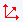

FAQ-892 Wie zeichne ich gleichmäßig verteilte Säulen/Balken bei ungleich verteilten numerischen X-Werten?
Evenly-Space-ColBar
Letztes Update: 14.05.2021
Falls Sie ein numerisches X haben und eine Y-Spalte auswählen, um ein Säulen-/Balkendiagramm zu zeichnen
Wenn Sie im folgenden Arbeitsblatt B(Y) markieren und ein Säulendiagramm erstellen (Zeichnen > Einfache 2D: Säulen), würde standardmäßig das Diagramm erstellt werden, das rechts vom Arbeitsblatt abgebildet ist. Dies geschieht, weil die Y-Werte auf einer numerischen X-Skala gezeichnet werden.
Wenn Sie jedoch die Balken genauso gleichmäßig verteilt wie auf der X-Achse zeichnen wollen, gibt es einige Optionen:

Nach X-Spaltenwert zeichnen:
Das Festlegen der X-Spalte als Kategorisch bewirkt, dass die X-Werte als Kategorien anstatt als Zahlen behandelt werden.
- Markieren Sie und klicken Sie mit der rechten Maustaste auf die X-Spalte und wählen Sie Setzen as: Kategorisch.
- Markieren Sie die Y-Spalte, um das Säulen-Balkendiagramm zu zeichnen.
Hinweise:- !!!Nachteil: Da die X-Spalte Format in Textgeändert wird, können Sie sie nicht als numerische Daten in einer Folgeanalyse wie einer Kurvenanpassung verwenden.
- Wenn Sie die kategorialen Werte neu ordnen möchten, klicken Sie doppelt auf die kategoriale Zelle und ändern Sie die Ordnung im Dialog Kategorien.

- In Origin 2017 oder älteren Versionen zeichnen Säulen-/Balkendiagramme die Säulen/Balken immer bei der numerischen X-Position, unabhängig davon, ob Sie eine oder mehrere Y-Spalten wählen. Wenn Sie also nicht äquidistant verteilte X-Werte haben und sie als äquidistant Säulen/Balken zeichnen möchten, können Sie der obigen Methode folgen.
|
Nach Zeilennummer zeichnen:
Anstatt die X-Spaltenwerte zu verwenden, zeichnet diese Methode gegen die Zeilennummer.
- Ohne irgendwelche Arbeitsblattdaten auszuwählen, klicken Sie auf Zeichnen > Einfache 2D: Säulen und weisen X und Y, wie unten gezeigt, zu. Wenn Sie die Option <autoX> nicht unter Säulen sehen, klicken Sie mit der rechten Maustaste in das rechte Feld und klicken Sie auf Verwende Zeilen# als X.
- Klicken Sie auf OK.
 | Sie können die X-Werte bei jedem Hilfsstrich anzeigen, indem Sie doppelt auf die X-Achsenbeschriftungen klicken, dann Typ = Text aus Datensatz einstellen und in der Dropdownliste Datensatzname den X-Datensatz wählen.
|
Falls Sie ein numerisches X haben und mehrere Y-Spalten auswählen, um ein Säulen-/Balkendiagramm zu zeichnen
In Origin 2018 und höher werden Säulen/Balken standardmäßig mit äquidistant verteilten X-Werten gezeichnet.
Dies wird durch Festlegen der Beschriftungen für die X-Hilfsstriche als Text aus X-Datensatz gemacht.
| Hinweise: Wenn Sie die Säulen/Balken bei ihren eigentlichen numerischen X-Positionen zeigen möchten, gibt es zwei Ansätze:
- Klicken Sie doppelt auf die Hilfsstrichsbeschriftung von X, um den Dialog Achsen zu öffnen.
- Setzen Sie auf der Registerkarte Beschriftung der Hilfsstriche Anzeige > Typ als Numerisch. Klicken Sie auf OK.
- Klicken Sie auf die Schaltfläche Neu skalieren , um den vollständigen Skalierungsbereich zu zeigen.
Alternativ:
- Wählen Sie im Menü Einstellungen: Systemvariablen.
- Setzen Sie die Systemvariable @DRX auf 0. Siehe unter diese FAQ Informationen zum Ändern des Werts einer Systemvariable.
|
Ein Hinweis zum Zeichnen von Datums-/Zeitdaten
Vor Origin 2021b wurden Datums-Zeitdaten in der X-Spalte beim Beschriften der X-Achse als Text aus Datensatz behandelt. Dies erstellt keine echte Datums-/Zeitskala.
Dies wurde geändert. Jetzt werden die Datums-/Zeitdaten in der X-Spalte als Datum behandelt, wenn die X-Achse des Säulen-/Balkendiagramms beschriftet wird.
Schlüsselwörter:ungleichmäßig verteilt, Säulen, Balken, gleichmäßig verteilt, äquidistant verteilt, isometrisch, diskret, Datum, Zeit